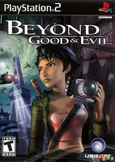

Sinopse
Beyond Good & Evil é um jogo de ação e aventura que acompanha Jade, uma jornalista e artista marcial que se envolve em uma conspiração intergaláctica enquanto luta para salvar seu planeta da dominação alienígena.
O jogo combina exploração em mundo semiaberto, resolução de enigmas, combates em tempo real e fotografia investigativa. Com uma narrativa envolvente, personagens carismáticos e trilha sonora memorável, o título se tornou cult com o passar dos anos, sendo lembrado por seu estilo artístico e temas maduros.
Características Principais
- Explore o planeta Hillys com veículos terrestres e aéreos
- Sistema de fotografia para investigação e coleta de provas
- Combates dinâmicos com uso de bastão e aliados
- Narrativa profunda com temas políticos e sociais
- Visual estilizado e trilha sonora imersiva
- Jogabilidade variada com exploração, enigmas e ação